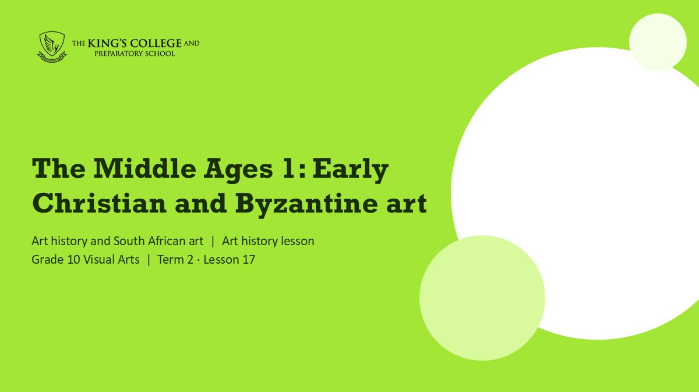

Term 2 · Lesson 17 · Art history lesson
The Middle Ages 1: Early Christian and Byzantine art
Start here
Today I will
- Explain how Christian art changed after 313 CE
- Describe the features of Byzantine mosaics
- Analyse a Byzantine mosaic for materials, flatness, gold and meaning
Why might a persecuted group of believers use secret symbols, like a simple fish, instead of pictures?
Words to know
- Early Christian
- Art made by Christians from about the 200s to the 500s, from the catacombs to the first great churches.
- Basilica
- A long hall with a nave, aisles and an apse, first used for Roman public buildings and then for churches.
- Mosaic
- An image made of small pieces (tesserae) of glass, stone or gold set into plaster.
- Icon
- A sacred image of Christ, Mary or a saint, used in worship in the Eastern Church.
- Byzantine
- The art and culture of the Eastern Roman Empire, centred on Constantinople, until 1453.
Slides

Notes
Art for faith: catacombs, basilicas, mosaics and icons (Hagia Sophia, Ravenna).
From catacombs to churches
- Before 313: Christians were often persecuted; they painted simple images in the catacombs, such as Christ as the Good Shepherd.
- Symbols: The fish, the Chi-Rho, Alpha and Omega, the lamb and the dove expressed faith quietly.
- 313: freedom: Constantine allowed Christians to worship freely (the Edict of Milan); large churches were built on the Roman basilica plan.
- Constantinople: The capital moved east; the Byzantine Empire lasted until 1453 and developed its own style.
Features of Byzantine art
- Glittering mosaic: Glass and gold tesserae set at slight angles catch candlelight and make walls shimmer.
- Flat and frontal: Figures face the viewer, with little depth or shadow; they seem to float rather than stand.
- Tall, large eyes: Elongated bodies and large eyes suggest the spiritual, not the physical, world.
- Gold ground: A gold background suggests heaven and eternity rather than an earthly place.
- Hagia Sophia (532–537): A vast dome on pendentives, ringed with windows, seems to float on light.
Byzantine art does not show the world as it looks, but heaven as believers hoped to see it.
Paul writes that Christ is the image of the invisible God. Why do you think Christians wanted to make images that pointed beyond the earthly world?
Practical
You need: History booklet, VJ
Analysing the Justinian mosaic at San Vitale
- Describe: title, date (c. 547), medium (glass and gold mosaic), place (San Vitale, Ravenna) and what is shown.
- Analyse: how do tesserae, flatness, repetition of figures and the gold ground create the effect?
- Find Justinian. How do his position, halo and the bread for the Eucharist set him apart?
- Interpret: what does the mosaic say about the link between church and emperor?
- Opinion: is this more a work of worship or of power, or both? Give two reasons.
Test yourself
- Identify two early Christian symbols and explain their meaning.
- Explain why Byzantine artists used gold backgrounds.
- Compare a Byzantine figure with the Augustus of Prima Porta in one or two sentences.
Show answers
1. Any two: the fish (ichthys: Jesus Christ, Son of God, Saviour), the Chi-Rho (first letters of 'Christ'), Alpha and Omega (the beginning and the end), the lamb (Christ's sacrifice), the dove (the Holy Spirit or peace). 2. To suggest heaven and eternity rather than an earthly place. 3. Augustus is rounded, naturalistic and weighty; Byzantine figures are flat, frontal and elongated to show the spiritual.
Finished early?
Turn a simple figure into the Byzantine style.
- Draw a small standing figure in your VJ as you normally would.
- Next to it, redraw it flat and frontal, taller and slimmer, with large eyes.
- Shade the background with yellow or gold pencil to suggest a gold ground.
- Label three Byzantine features you used.